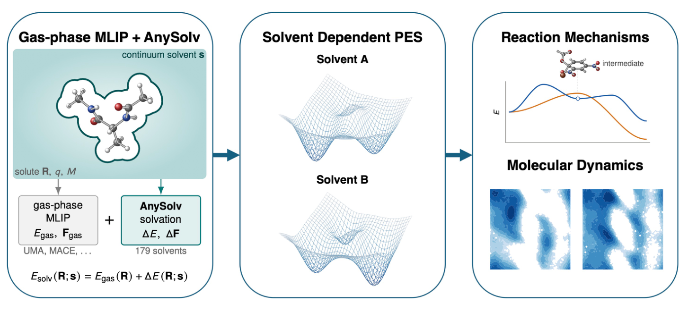
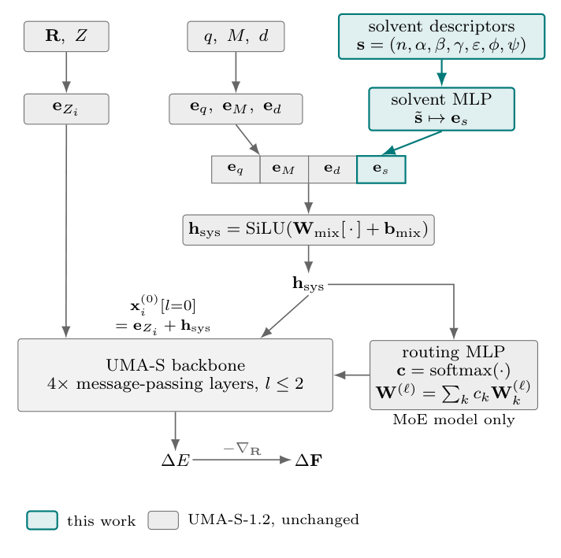
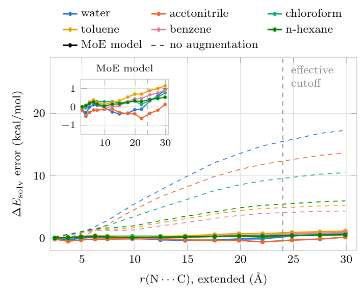
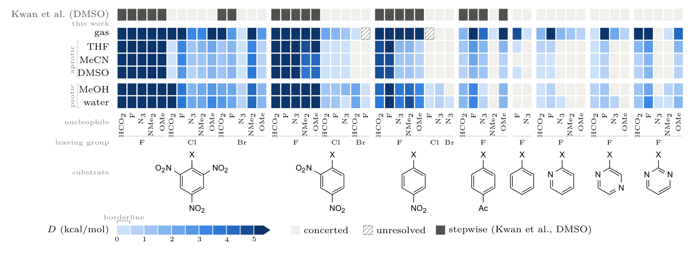
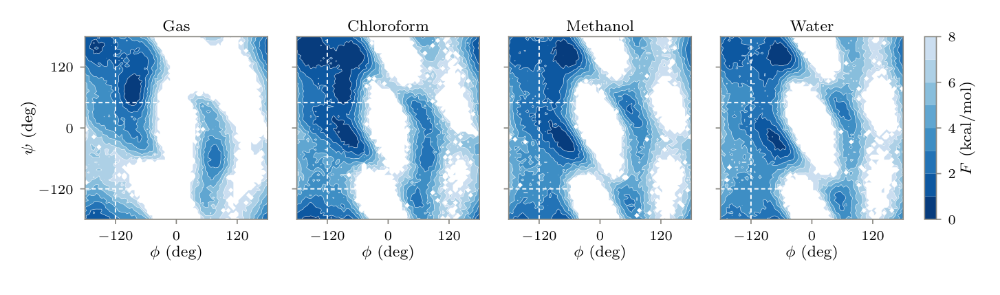

AnySolv：给气相机器学习势加上溶剂化修正，让反应路径和动力学随溶剂变化
论文原文 ↗原文：Anton Z. Ni、Joonho Lee，Solvating machine-learning interatomic potentials for solution-phase chemistry，arXiv:2610.17226，2026。〔官方页面｜〕
同一个反应换一种溶剂，势垒、中间体稳定性甚至反应机理都可能改变。气相机器学习原子间势能够快速给出能量和原子受力，但它学到的通常是没有溶剂时的势能面。直接用它做溶液化学，会丢掉溶剂对带电结构、过渡态与不同构象的稳定化作用。
把数百个溶剂分子显式放进模拟，当然可以引入这些作用，但原子数和采样负担随之增加。量子化学中的隐式溶剂模型则把周围液体表示为连续介质：用介电性质等信息计算溶剂对溶质能量的影响。问题是，常规 DFT 隐式溶剂计算需要与电子密度一起求解，而普通机器学习势并不输出这套电子结构信息。
AnySolv 提出的办法是：单独学习“从气相到溶液增加了多少能量和力”，再把这一项加到已有气相势上。 这样，气相模型描述分子本身的化学，AnySolv 描述溶剂改变了什么，两者合起来用于结构优化、反应路径搜索和分子动力学。

图1｜气相模型给出能量与力，AnySolv 给出溶剂化修正，二者相加后进入反应机理计算和分子动力学。
一、方法怎样做：训练一个修正项，使用时与气相势相加
从同一个分子构型的两次计算，得到学习目标
输入首先是一个具体溶质构型：原子种类、三维坐标、总电荷和自旋多重度。自旋多重度表示体系未成对电子对应的自旋状态，使模型能够处理开壳层分子。再指定一种溶剂，作者在相同几何下比较气相与溶液的量子化学结果：
\[ \Delta E(R;s)=E_{\mathrm{DFT+SMD}}(R;s)-E_{\mathrm{DFT,gas}}(R),\qquad \Delta F=-\nabla_R\Delta E. \]
其中 SMD 是用溶剂物理参数描述连续介质效应的隐式溶剂模型。两次计算保持溶质构型相同，得到的是该构型上的溶剂化能与力修正。用这种标签，可以覆盖过渡态、非平衡构型和离子，而不必只依靠平衡态的实验溶剂化自由能。
作者主要从 OMol25 取得分子构型及已有气相参考，再用 ωB97M-V/def2-TZVPD 与 SMD 补充溶液计算，建立约140万组能量与力标签，主要覆盖36种溶剂。训练材料包含带电分子、开壳层物种以及大量反应路径和过渡态结构；另补充阴离子和正负电荷分离较远的结构，扩展相关化学环境。
溶剂怎样进入模型：用物理性质描述“环境”，再影响原子间信息传递
模型没有把“水”“甲醇”当作互不相关的编号，而是使用七个连续描述符：折射率、氢键酸性、氢键碱性、表面张力、介电常数、芳香性和电负性卤素比例。因而，一个未参与训练的溶剂，只要有这些物性，就能被放进同一表示空间；模型支持 Minnesota 数据库中的179种溶剂。
这些数值先通过一个小型神经网络，变成模型内部的溶剂表示，再与电荷、自旋等体系信息结合，送入原子图神经网络。图中的节点是原子，邻近原子反复交换信息，模型据此判断分子不同部位对溶剂的响应。最终把各原子的能量贡献加起来，得到 ΔE，再对坐标求导得到 ΔF。因此，结构优化和动力学所用的力与同一个能量函数相对应。

图2｜溶剂描述符先转为向量，再与电荷、自旋等信息一起调节原子特征和消息传递。
作者训练了两个版本：一个从 UMA-S-1.2 初始化并微调的混合专家模型（MoE），另一个是从头训练的紧凑模型。混合专家就是根据当前体系信息，组合多组网络权重完成预测；对固定组成、电荷、自旋和溶剂，这些组合权重可在动力学开始前合并，后续反复计算构型时复用。
这里需要训练的是 AnySolv 修正模型；实际使用时，与它相加的既有气相势无需重新训练。 每次输入当前构型，气相势返回 E 和 F，AnySolv 返回 ΔE 和 ΔF，把两组结果分别相加，就能交给现成的优化器或动力学程序。
带电结构的训练怎样接到反应化学
反应过程中，正负电荷可能逐渐分离。作者为此加入不同阳离子、阴离子基团与连接链组成的训练结构，再用另一组 ω-氨基酸两性离子检验。两性离子就是同一分子内部同时带有正、负电荷的结构。

图3｜横轴是正负电荷基团的间距；虚线为没有电荷分离增广时的误差，实线为完整 MoE 模型。
在展开链两性离子中，完整 MoE 模型相对 DFT-SMD 的平均误差为0.31 kcal/mol；没有这组增广时，水中一个电荷间距约24.9 Å的结构误差达到15.8 kcal/mol。这一步让模型能更好地处理电荷在空间上分开的构型，也接到了后面的离子反应测试。
二、主要结果：精度、反应机理与构象采样怎样接起来
1. 用接近 DFT-SMD 的溶剂化精度，降低反复计算的成本
在 MNSol、Solv@TUM 和 FlexiSol 三个外部基准上，MoE 模型相对同级别 DFT-SMD 的溶剂化能平均绝对误差分别约为 2.1、2.7和4.3 meV。对训练中未出现的溶剂，作者还逐个溶质扣除跨溶剂均值，专门比较“换溶剂导致的能量变化”；未见溶剂上的决定系数为0.944。
再与实验溶剂化自由能比较，AnySolv 与 DFT-SMD 达到相近精度。例如，中性分子的 MNSol 和 Solv@TUM 自由能误差约0.95和0.99 kcal/mol。换用 MACE-POLAR-1-M 作为气相势后，各组自由能误差变化不超过0.05 kcal/mol，展示了修正项在不同气相势之间的组合能力。
速度方面，作者的 GPU 与 CPU 基准中，模型方案相对 DFT-SMD 降低超过三个数量级的计算成本。这个收益的价值体现在需要反复求能量和力的任务：可以把一次溶剂效应计算扩展为大量反应搜索和长时间采样。
2. 120个芳香亲核取代反应，比较溶剂如何改变中间体
芳香亲核取代反应可以一步协同完成，也可能先形成 Meisenheimer 中间体，再脱去离去基团。这个中间体是亲核体加到芳环后形成的带负电加成结构；它在势能面上是否形成稳定能谷，决定反应路径更接近一步还是两步。
作者将 UMA-S-1.2 与 MoE AnySolv 组合，对120个反应分别考察气相和 THF、乙腈、DMSO、甲醇、水，共720个反应—环境组合。先优化反应物、中间体和产物，再搜索过渡态、计算振动频率，并沿内禀反应坐标把过渡态接到两侧极小值。随后用中间体到两侧较低过渡态的电子能差，衡量这个能谷的深度。

图4｜各列对应反应，各行对应气相或溶剂；蓝色越深，中间体能谷越深，浅灰色对应协同反应。
全套搜索约包含2100次极小值优化和1900次过渡态搜索，用时68 GPU小时。在 DMSO 中，120个反应里有101个与 Kwan 等此前 DFT 研究对“是否存在中间体”的判断一致，原研究判为分步反应的21个反应全部找到中间体。
化学趋势也很清楚：硝基等吸电子基团稳定芳环负电荷，氟作为离去基团时更容易形成较深中间体能谷；甲醇和水中的能谷整体比所考察的非质子溶剂约深1 kcal/mol。AnySolv 因而把溶剂变化接入了可以批量执行的机理比较。
3. 溶剂改变构象比例，并能对应到实验可测信号
作者进一步研究丙氨酸二肽，用两个骨架二面角 φ、ψ 描述构象，并采用良温元动力学采样。元动力学是在已访问的角度区域逐渐加入偏置，帮助分子越过构象势垒，再通过重加权恢复平衡分布。

图5｜φ、ψ 是骨架二面角，深蓝表示低自由能区域；换溶剂后，主要构象区域的相对稳定性发生变化。
随着溶剂极性增加，平衡分布从内部形成七元氢键环的 C7 构象，转向酰胺基更暴露的 PPII（聚脯氨酸II型）和 αR（右手α螺旋型）骨架角度区域。作者将模拟构象通过 Karplus 关系换算为核磁共振中的三键耦合常数，氯仿、甲醇和水中的计算值分别为 7.4、6.4、5.9 Hz，实验值为7.5、6.8、6.0 Hz。这样，模型输出的构象分布与实验观测建立了直接联系。
三、值得关注的贡献
AnySolv 将气相化学与溶剂化响应分成两个可组合的能量项，同时保留坐标梯度，使溶剂效应能进入反应路径和动力学，而不只停留在单个分子的性质预测。连续溶剂描述符又使同一个修正模型能够支持多种环境。
对计算反应研究，最有用的新增能力是：已有气相势配上一个溶剂修正项，就能沿同一套流程比较底物、溶剂、过渡态和构象。120个反应的机理筛选与二肽的实验耦合常数比较，分别展示了它在反应化学和统计采样中的用途。
原始摘要完整中文翻译
大多数机器学习原子间势（MLIP）是在气相数据上训练的，这限制了它们在溶液化学中的应用。在此，我们提出 AnySolv，一种可迁移的隐式溶剂化势，无需重新训练已有气相势，即可为其提供依赖溶剂的能量与力修正。它使用在36种溶剂中通过密度泛函理论（DFT）和 SMD 计算的140万组溶剂化能与力进行训练，覆盖带电、开壳层和过渡态结构。由于溶剂由连续物理描述符表示，AnySolv 支持179种溶剂，包括训练中未出现的溶剂。在外部基准上，AnySolv 以2—4 meV的平均绝对误差重现 DFT-SMD 溶剂化能，计算成本降低超过三个数量级；与实验溶剂化自由能比较时，其精度也与 DFT-SMD 相当。这使我们能够在六种相环境中筛选120个芳香亲核取代反应的机理，并开展分子动力学模拟，重现实验观察到的丙氨酸二肽随溶剂变化的构象偏好。通过为已有 MLIP 提供可迁移的溶剂化修正，AnySolv 使依赖溶剂的化学反应性与分子动力学能够得到可扩展的模拟。